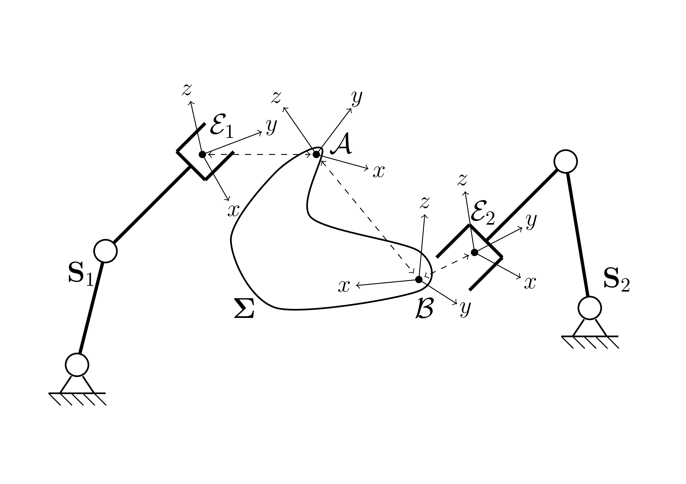
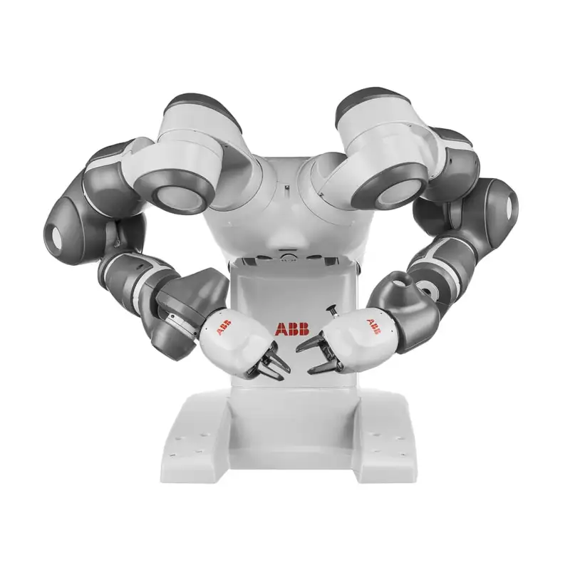
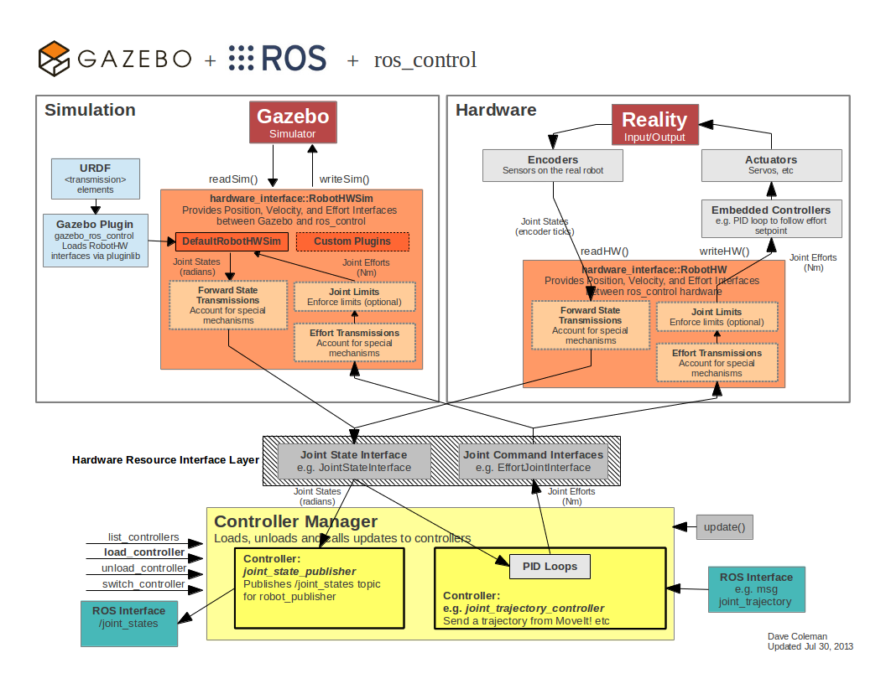
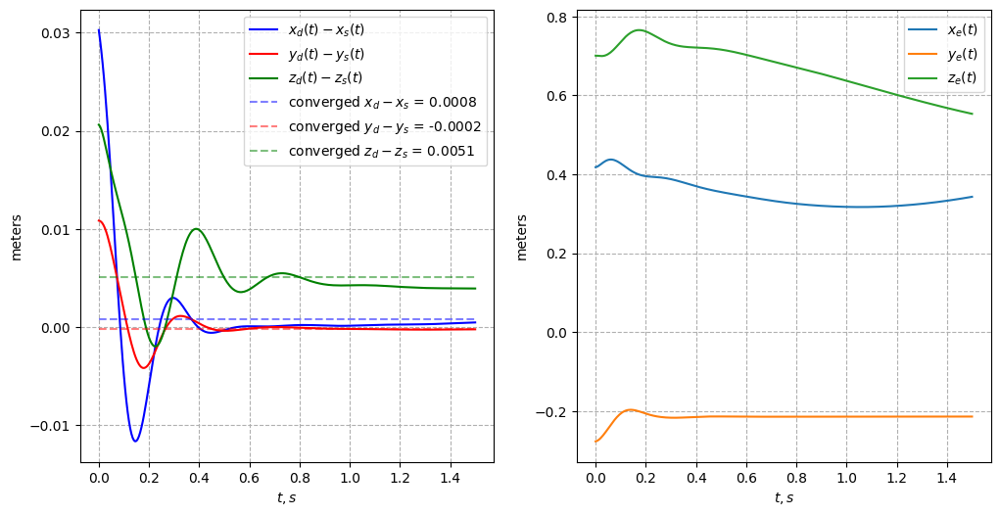
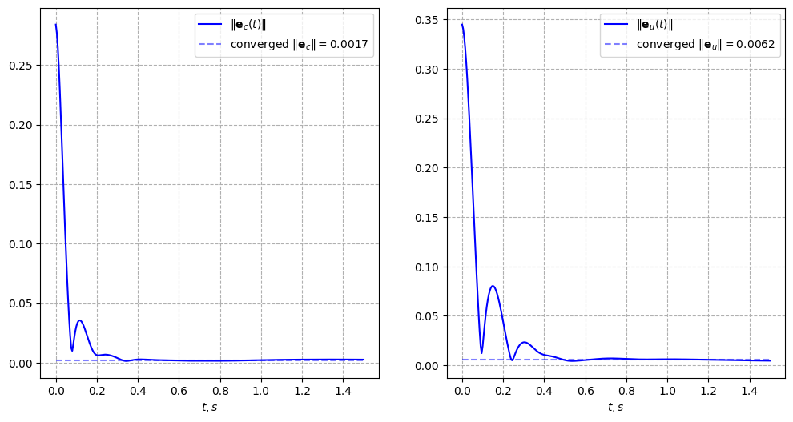

Feedback control over constrained robotic systems with ROS 2 / Gazebo
May 10, 2025
Problem statement
- Collaborative work with a common object is a widespread scenario in robotics

Figure 1: Atlas works with various cargos
Problem statement (formal)
- Rigid body systems: \(\mathbf{S}_1\), \(\mathbf{S}_2\); Coupling body - \(\boldsymbol \Sigma\)
- \(\mathcal{E}_1\), \(\mathcal{E}_2\), \(\mathcal{A}\), and \(\mathcal{B}\) are fixed on their bodies
- Goal: \(\mathcal{E}_1 \rightarrow \mathcal{A}\) and \(\mathcal{E}_2 \rightarrow \mathcal{B}\)

Inverse dynamics approach
- Model based control
- The control input: \(\mathbf{u} = M(\mathbf{q})\mathbf{a}_d + C(\mathbf{q}, \dot{\mathbf{q}}) \dot{\mathbf{q}} + g(\mathbf{q})\)
- Where \(\mathbf{a}_d = K_p (\mathbf{q_d} - \mathbf{q}) + K_d (\mathbf{\dot{q}_d} - \dot{\mathbf{q}})\)
Udwadia-Kalaba [1] approach
- Mathematical model: \(M(\mathbf{q})\ddot{\mathbf{q}} + C(\mathbf{q}, \dot{\mathbf{q}}) \dot{\mathbf{q}} + g(\mathbf{q}) = \boldsymbol{\tau} \Rightarrow M \dot{\mathbf{v}} = \mathbf{Q}\)
- Holonomic and non-holonomic constraints have a form: \(A(\mathbf{q}, \mathbf{v}, t) \dot{\mathbf{v}} = \mathbf{b}(\mathbf{q}, \mathbf{v}, t)\)
- Constraints forces: \(\mathbf{Q}_c = M^{1 / 2} (A M^{-1 /2})^+(\mathbf{b} - AM^{-1} \mathbf{Q})\), will used as control input
\(\Big \Uparrow\)
\(\begin{aligned} \min_{\dot{\mathbf{v}}} \quad & [\dot{\mathbf{v}} - \mathbf{a}]^T M [\dot{\mathbf{v}} - \mathbf{a}] \\ \textrm{s.t.} \quad & A \dot{\mathbf{v}} = \mathbf{b} \\ & \mathbf{a} = M^{-1} \mathbf{Q} \end{aligned}\)
Applying it (Frame to frame)
\[ \begin{bmatrix} \dot{\boldsymbol{\upsilon}}_Y - \dot{\boldsymbol{\upsilon}}_X \\ \dot{\boldsymbol{\omega}}_Y^{\mathcal{Y}} - \dot{\boldsymbol{\omega}}_X^{\mathcal{Y}} \end{bmatrix} + K_d \begin{bmatrix} \boldsymbol{\upsilon}_Y - \boldsymbol{\upsilon}_X \\ \boldsymbol{\omega}_Y^{\mathcal{Y}} - \boldsymbol{\omega}_X^{\mathcal{Y}} \end{bmatrix} + K_p \color{green}{ \begin{bmatrix} \mathbf{r}_Y - \mathbf{r}_X \\ \log (R_X^T R_Y) \end{bmatrix} } = 0 \]
- Hint for proof: \(V = \frac{1}{2} \tilde{\boldsymbol{\omega}}^T \tilde{\boldsymbol{\omega}} + \frac{K_p}{2} \mathbf{e}^T \mathbf{e}\), where \(\tilde{\boldsymbol{\omega}} = \boldsymbol{\omega}_Y^{\mathcal{Y}} - \boldsymbol{\omega}_X^{\mathcal{Y}}\), and \(\mathbf{e} = \log (R_X^T R_Y)\)
- For simplicity in this study \(\mathcal{E}_1 = \mathcal{A}\) for any \(t > 0\)
- With \(\mathcal{X} = \mathcal{B}\), and \(\mathcal{Y} = \mathcal{E}_2\) the equation above can be converted to desired form, \(A \dot{\mathbf{v}} = \mathbf{b}\)
- Control law can be formulated in the same way
\(A\) and \(\mathbf{b}\) for constraints
\(A = \begin{bmatrix} \tilde{J}_{d,v} \\ \tilde{J}_{d,\omega} \end{bmatrix}\)
\(b = -\begin{bmatrix} \dot{\tilde{J}}_{d,v} \\ \dot{\tilde{J}}_{d,\omega} \end{bmatrix} \mathbf{v} - K_d \begin{bmatrix} \boldsymbol{\upsilon}_d \\ \boldsymbol{\omega}_d^{\mathcal{E}_2} \end{bmatrix} - K_p \color{green}{\mathbf{e}_{\text{SE}(3)}( T_{\mathcal{W}}^{\mathcal{E}_1} \cdot T_{\mathcal{A}}^{\mathcal{B}}, T_{\mathcal{W}}^{\mathcal{E}_2})}\) \(\Leftarrow \color{green}{\begin{bmatrix} \mathbf{r}_{E_2} - \mathbf{r}_B \\ \log (R_B^T R_{E_2}) \end{bmatrix}}\)
\(\tilde{J}_{d,*}\) is the difference of Jacobians
\(v\) stands for linear part, \(\omega\) stands for angular part
\(A\) and \(\mathbf{b}\) for control
\(A = \begin{bmatrix} - J_{E_1, v} \\ - R_D^T J_{E_1, \omega} \end{bmatrix}\)
\(\mathbf{b} = \begin{bmatrix} \dot{J}_{E_1, v} \\ R_D^T [ \dot{J}_{E_1, \omega} - \hat{\boldsymbol{\omega}}_D J_{E_1, \omega}] \end{bmatrix} \mathbf{v} - \begin{bmatrix}\mathbf{a}_D^{\mathcal{D}} \\ \boldsymbol{\epsilon}_D^{\mathcal{D}} \end{bmatrix} - K_d \begin{bmatrix} \boldsymbol{\upsilon}_d \\ \boldsymbol{\omega}_d^{\mathcal{D}}\end{bmatrix} - K_p \color{green}{\mathbf{e}_{\text{SE}(3)}(T_{\mathcal{W}}^{\mathcal{E}_1}, T_{\mathcal{W}}^{\mathcal{D}})}\)
\(T_{\mathcal{W}}^{\mathcal{D}}\) stands for desired attitude
Task prioritization
Why?
- Control tasks can be unreachable
- Easy to switch between tasks
Solution:
- \(\begin{aligned} \min_{\dot{\mathbf{v}}} \quad & [\dot{\mathbf{v}} - \mathbf{a}]^T M [\dot{\mathbf{v}} - \mathbf{a}] + \color{blue}{ \gamma [A_u \dot{\mathbf{v}} - \mathbf{b}_u]^T [A_u \dot{\mathbf{v}} - \mathbf{b}_u] } \\ \textrm{s.t.} \quad & A_c \dot{\mathbf{v}} = \mathbf{b}_c \\ & \mathbf{a} = M^{-1} \mathbf{Q} \end{aligned}\)
\(\Longleftarrow\)
Will be used
Dual-arm YuMi
- Initial DoFs: 18
- Reduced to 14

Figure 3: Dual-arm YuMi IRB 14000
C\(\texttt{++}\) & Frameworks
- ROS2 Humble [2] - as core for control computation
- Gazebo Fortress [3] - simulation environment
- Pinocchio [4] - fast computational tool for dynamics and kinematics
- ProxSuite [5] - the advance convex problem solver
ROS control for Gazebo

Figure 4: Data flow of \(\texttt{ros_control}\) and Gazebo
Custom controllers
- \(\texttt{YumiInverseDynamicsController}\) - baseline inverse dynamics controller
- Accepts commands from \(\texttt{sensor_msgs::msg::JointState}\) from \(\texttt{\\commands}\)
- Uses URDF from \(\texttt{\\robot_description}\)
- Relies on simple inverse dynamics model
- \(\texttt{YumiUdwadiaController}\) - proposed Udwadia-Kalaba controller
- Accepts commands from \(\texttt{geometry_msgs::msg::PoseStamped}\) from \(\texttt{\\commands}\)
- Accepts trajectory from \(\texttt{moveit_msgs::msg::CartesianTrajectory}\) from \(\texttt{\\trajectory}\)
- Uses URDF from \(\texttt{\\robot_description}\)
- Relies on Udwadia-Kalaba approach
Simulation video
Plots

Figure 5: Simulation position discrepancy \(\mathcal{D} - \mathcal{E}_1\) (left), and \(\mathcal{E}_2\) position (right)
Plots

Figure 6: Simulation \(\color{green}{\mathbf{e}_{\text{SE}(3)}}\), left \(\mathbf{e}_c\) - constraint, right \(\mathbf{e}_u\) - control
Conclusion
Achieved results
- Dynamic constraint assignment
- Fast computation (\(\approx 100 \mu s\) in experiment)
- Simple prioritaization
Further works
- \(K_p, K_d\) finetuning steel needs in further investigations
- Support of non-rigid bodies
Bibliography
Appendix. Brief Lie theory
The Lie group, a mathematical concept dating back to the 19th century, was first proposed by Sophus Lie
\(\text{SO}(3)\) - group, \(\mathbb{R}^3\) - algebra
\(\hat{\mathbf{a}} = \begin{bmatrix} 0 & -a_3 & a_2 \\ a_3 & 0 & -a_1 \\ -a_2 & a_1 & 0 \\ \end{bmatrix} = A\), and \(A^{\vee} = \mathbf{a}\)
\(\boldsymbol{\theta} = \text{Log} (R) \equiv \frac{\theta (R - R^T)^{\vee}}{2 \sin \theta}\), where \(\theta = \cos^{-1} \frac{\text{trace}(R) - 1}{2}\), and \(R = \text{Exp}(\boldsymbol{\theta}) \equiv I + \frac{\sin \theta}{\theta} \hat{\boldsymbol{\theta}} + \frac{1 - \cos \theta}{\theta^2} \hat{\boldsymbol{\theta}}^2\)
\(J_r^{-1}(\boldsymbol{\theta}) = I + \frac{1}{2} \hat{\boldsymbol{\theta}} + \biggl( \frac{1}{\theta^2} - \frac{1 + \cos \theta}{2 \theta \sin \theta} \biggr) \hat{\boldsymbol{\theta}}^2\)
Appendix. Proof of stability
Proposal: \((\dot{\boldsymbol{\omega}}_D^{\mathcal{D}} - \dot{\boldsymbol{\omega}}^{\mathcal{D}}) + K_d (\boldsymbol{\omega}_D^{\mathcal{D}} - \boldsymbol{\omega}^{\mathcal{D}}) + K_p \log (R^T R_d) = 0\) is asymptotically stable
Simplify to \(\dot{\tilde{\boldsymbol{\omega}}} + K_d \tilde{\boldsymbol{\omega}} + K_p \mathbf{e} = 0\) by \(\mathbf{e} = \log R^T R_d\), and \(\tilde{\boldsymbol{\omega}} = \boldsymbol{\omega}_D^{\mathcal{D}} - \boldsymbol{\omega}^{\mathcal{D}}\)
\(\dot{\mathbf{e}} = J_r^{-1}(\mathbf{e})[(R^T R_d)^T (\dot{R}^T R_d + R^T \dot{R}_d)]^{\vee} = J_r^{-1}(\mathbf{e}) \tilde{\boldsymbol{\omega}}\)
Let the Lyapunov candidate is \(V = \frac{1}{2} \tilde{\boldsymbol{\omega}}^T \tilde{\boldsymbol{\omega}} + \frac{K_p}{2} \mathbf{e}^T \mathbf{e}\)
\(\dot{V} = \tilde{\boldsymbol{\omega}}^T \dot{\tilde{\boldsymbol{\omega}}} + K_p \mathbf{e}^T \dot{\mathbf{e}} = -K_D \tilde{\boldsymbol{\omega}}^T \tilde{\boldsymbol{\omega}} < 0\) by \(\mathbf{e}^T J_r^{-1}(\mathbf{e}) = \mathbf{e}^T\), see [6]
By applying LaSalle’s Invariance Theorem differential equation is asymptotic stable
Appendix. Jacobians
\(J_{d, *} = J_{E_2, *} - J_{E_1, *}\)
\(\begin{bmatrix} J_{d, v} + [R_{E_1} \mathbf{r}_{AB}^{\mathcal{A}}]^{\wedge} J_{E_1, \omega} \\ R_{E_2}^T J_{d, \omega} \end{bmatrix} = \begin{bmatrix}\tilde{J}_{d,v} \\ \tilde{J}_{d, \omega} \end{bmatrix}\)
\(\dot{\tilde{J}}_{d,v} = \dot{J}_{d,v} + \hat{\boldsymbol{\omega}}_{E_1} \hat{\mathbf{r}}_{AB} J_{E_1, \omega} + \hat{\mathbf{r}}_{AB} \dot{J}_{E_1, \omega}\)
\(\dot{\tilde{J}}_{d,\omega} = R_{E_2}^T [\dot{J}_{d, \omega} - \hat{\boldsymbol{\omega}}_{E_2} J_{d, \omega}]\)